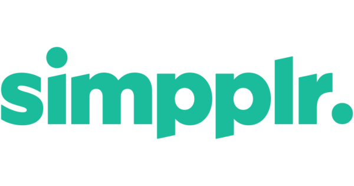
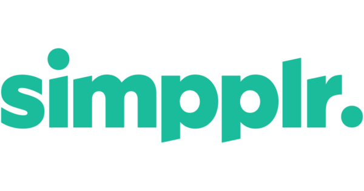

NYU StartEd
Improving an incubator's communication.
MY ROLE
USER RESEARCH / CONSULTANT
Problem
Stated Problem
StartEd is an education technology (EdTech) incubator at New York University (NYU) with about 30 local startups with 100 startups worldwide.
The leaders of StartEd approached my team with a problem: 'Our Slack channel is disorganized and, because our biggest goal is to grow as an online community where members can help each other and get help, we need to find a way to create a better digital "Kanban" for our community.'
Defining the Problem
StartEd's communication issues extended well beyond the Slack channel and the stated problem: members were unclear in general on how to best take advantage of all the opportunities provided by the StartEd program.
Hypothesis
By providing a holistic design thinking approach to StartEd's communication issues that incorporates technological as well as non-technological solutions, we can help improve StartEd members' experience and thus improve member retention for the program itself.

Process
Because we were dealing with a complex organization of many different moving parts, my team and I knew that we had to really understand how StartEd works, who were our users and how could we address both the members' needs and the client's needs simultaneously
We dove into our research process and soon learned that we needed to use different methods than we would usually for a digital product.
Conversation
By speaking at length with our client and casually chatting with StartEd members who were physically at the StartEd incubator co-working space at NYU, my design partner Jeb Kampil and I were able to get the lay of the land. Here is how StartEd works:
StartEd Organization
* StartEd receives partial assistance from NYU, and many of the mentors on staff and board members are also university faculty.
* The rest of StartEd's funding comes from monthly membership fees as well as future equity in some startups.
* There are 3 major types of StartEd members: on-site incubator members, on-site accelerator members, and off-site incubator members.
* Within each category, members have a variety backgrounds: founders, developers, marketing, and business.
* Incubator members pay a monthly fee to be a part of the StartEd community and have access to the on-site workspace, daily events/lectures, and slack channel.
* Accelerator members must apply to the program and give StartEd equity in exchange. They take part in a rigorous on-site 3-month program with access to mentors, daily events, and slack channel. Their work culminates in presenting at the annual "NY EdTech Week" Conference that is also produced by a separate division within the StartEd staff team.
* Off-site incubator members are the same as regular incubator members except that they must attend all events via Audio Conference.
User Personas
It was clear from our conversations that StartEd has a complex organizational structure, and that different classes of users would have complex and different kinds of needs.
Because of this, we decided to skip our original idea of conducting a quantitative survey and go straight to conducting in-depth user interviews so we could comprehensively understand each user's needs.
Using this script as a guide, we conducted hour-long interviews with 7 different members. We took extensive notes and condensed the information into profiles of two top priority users:


Our 7 users had a broad range of needs and motivations. While we found plenty of overlap, it was also important for us to prioritize what was the most important and what problems were solvable.
User Stories & User Flows
User Stories
Because our client's goal was to grow their off-site membership we realized that we needed to prioritize the needs of off-site members first.
From there, we created a highly detailed user stories document to organize and prioritize the needs of all of the interviewees in order of importance as well as feasability. Here are a few of the user stories:
| As an... | I want to... | So that I can... | Priority |
|---|---|---|---|
| Off-site User | Have weekly Google Hangouts | Feel better connected to other members. | High |
| Off-site User | Have easy access to an online calendar | Plan ahead and digitally attend important events. | High |
| Off-site User | Access a section for member skills | Know who to ask for specific help. | High |
| On-site User | Have nametags for every company at the workspace | Know other members better and talk to them. | High |
| Incubator User | Sort member profiles by tags on Slack | Find members with specific skills. | High |
| On-site User | Have more icebreakers | Feel comfortable talking to other members. | Medium |
| Accelerator User | See more Slack Channels | Organize my information better | Medium |
| Accelerator User | Know if other founders are in the same development stage | Share ideas and tips | Low |
While all of these needs were important, some of them required solutions that were outside the scope of the project. By identifying what was most important we decided the focus should be on creating:
- A better sense of emotional connection online.
- Easier ways to know who other members are (role, type of market, skills etc.).
- Protocols on how interact in the space and online.
A) Network
- Ways for members to plan ahead better.
- Easier ways to find out information on slack and get questions answered.
- Less overwhelming forms of digital communication.
B) Information
These 6 problems were identified by prioritizing all our user stories. To see them all, go here:
User Flows
Identifying that "effectively asking for help" was one of the biggest frustrations across the board, we visually drew out how the exact pathways a user would need to take to accomplish that goal through this user flow using both technological and non-technological options:

Market Research
Intrateam communication is common problem. However, because the client didn't want to invest a lot of money into the solution, my team and I had to think strategically about what solutions were not only already available, but also financially possible.
Although we knew that a technological solution would not accomplish all the goals we needed, we started out at least seeing what technologies already existed.
Options
 

Slack
Since StartEd was already using Slack and many members also use Slack for their other projects, it made sense to explore what kinds of plugins might work well with Slack. We also explored different ways to organize the Slack channel itself and see if that could be a part of the solution.
However we found that most plugins that achieved what we needed only became truly effective at a paid level. Even Slack's functionality is limited until you become a paying subscriber. For StartEd that meant about $1,000/month.
Simpplr
Simpplr is one of many platforms that has all the functionality that StartEd could need, however also at about $1,000/month it became a non-solution.
Donut
Donut was one of our favorite finds; a free Slack plugin that randomly connects members within a Slack channel who have not been introduced yet for a coffee or skype date, it was a perfect solution to Off-site members' problem of needing more direct human communication.
Options Conclusion
After scouring the internet for other solutions, we realized that because of the financial constraints we couldn't rely solely on technology to fix the StartEd members problems, we needed a comprehensive, holistic approach.
Design Thinking
StartEd already has in place all of the resources that their members are wanting. Their issue is not having what Don Norman would call "Signifiers" - explanations, labels, guidelines etc. that tell the members how to access what they're looking for.
Our job as UX consultants therefore was to suggest different ways that StartEd could provide better "Signifiers". We divided up our solutions into 4 broad categories:
- Protocols
- Spatial Design
- Programmatic Changes
- Technological Solutions
Many of the StartEd members' issues centered around simply not knowing the best way to go about doing certain simple thing such as: 'How do I appropriately introduce myself to someone over Slack or in person' and 'How to I effectively contribute to the #GiveFirst internal culture promoted by the StartEd management?'
We came up with the suggestion to create simple FAQs, housed within the Slack group, that would define appropriate protocols, alleviating members' anxieties and helping with overall internal communication.
We defined several issues to be addressed by the FAQs, however we suggested that StartEd see our suggestions as a starting point. The overall solution is to have an easily accessible FAQ section in the first place.
Suggestions:
- How to: Set up your Slack Profile.
- How to: Approach someone at the NYU Incubator.
- How to: Do a "Stand-up".
- How to: Send a group message in Slack.
- How to: #GiveFirst.
- How to: Ask for help in Slack.
- How to: Search for other members in your field.
- How to: Get started at the NYU Incubator.
- How to: Set up a "Donut Meeting".
- How to: Attend a remote event.
Although the StartEd management's long term plans were focused on making the experience better for off-site users, we couldn't help but offer some simple solutions for how to reorganize the physical spatial layout of the incubator site to improve the current on-site users' experience.
Spatial Design Suggestions
Current Floorplan

Suggested Floorplan

Current Floorplan
Under the current floorplan there are two rooms that are set up differently. Members who are in the accelerator space face eachother across the table and have nametags for each company. Incubator members have no nametags and face the walls (with a couple strange spaceship shaped tables in the middle of the room).
This lead to incubator members feeling less valued than their accelerator counterparts. Furthermore, without nametags, members often might work next to someone else for weeks without knowing who they are or what they do.
Suggested Floorplan
Our proposed solution is simply to have the Incubator Space mirror the Accelerator Space. Our one change to the accelerator space was to switch the positioning of the tables so as to create more of a sense of common space between the two rooms.
By having all members face eachother and by adding nametag "Signifiers" we hope these simple changes will encourage more in person communication for all StartEd members.
Because for many of the off-site members, planning ahead and video conferencing were top priorities, this required StartEd itself to think about programming differently.
Planning AheadWe suggested that the StartEd management not only create a static channel within Slack to house the URL to their calendar - allowing members to see farther out - but also that they should plan the events themselves farther out in advance
Video OptionsBecause off-site members wanted to feel more emotionally connected with other members, adding more and better video conferencing events and options was a big priority.
We suggested that StartEd not only make sure that their AV equipment was top notch, but also figure out ways to make those events more personal to off-site members. We suggested:
- Adding a 5 minute live "Stand Up" before every event. This requires everyone attending to briefly state their name, their company, their role, and what they're working on that week.
- Adding regular Google Hangout events for up to 8 members at a time who are either a part of the same: market, role, or development stage.
In order to address specific problems with Slack as well as creating space to house our new protocols and solutions we knew we needed to reorganize Slack itself. We decided that Slack would be the go-to destination for all StartEd infomration and created clearer channel titles as well as designating some channels as static - such as the FAQ and Calendar channel - to simply house information.
We also made sure to add more "Signifiers" in Slack wherever we could.
We came up with the titles for the Slack channels by conducting a card sort with 3 StartEd members:
Card Sorting

This card sort activity showed us that there were two different ways to organize the channels. We had the option of:
1. Organizing by discussion topic. For example:
- Finance
- Legal
- Marketing
- Tech
2. Organizing by actions. For example:
- Ask
- Offer
- Networking
With this information in hand, we created two different approaches for the Slack group layout.
A/B Testing
Option A: 85%

Option B: 15%